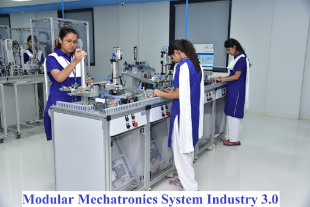

The School of Automation offers B.Tech. Programme in Electrical & Electronics, Electronics & Instrumentation and Mechatronics. The School also offers the elective courses in field of Mechatronics & Robotics to other B. Tech. Programme of University. The School is immersed in research & development in area of Machine Learning, Process Control, Humanoid, Robot Manipulations, Power system, Power Electronics, Renewable Energy, Industrial Automation and Manufacturing Technology.
JOURNALISM AND MASS COMMMUNICATION
Journalism and Mass Communication education at Vidyapith is aimed to create women professionals with ethical values to contribute to the society and lead the industry. Journalism and Mass Communication process helps to understand how different elements of communication provide new development in social, political and economic context. The curriculum offers a systematic progression of hands-on production work, conceptual skills and artistic expression required to become an accomplished media practitioners in a social and technological environment. It also includes various on-field activities like real-time news reporting, on-field news coverage, industrial training, developing actual advertising campaigns etc.
CHEMICAL ENGINEERING
The Chemical Engineering Department is one of the premier engineering departments of Banasthali University. It has a dynamic and goal oriented group of faculty well supported by experienced technical staff. The Department offers instructions at undergraduate level leading to a 4 year B.Tech degree. The instruction at the undergraduate level aims at providing the students a broad-based education with emphasis on theory and practice of Chemical Engineering, keeping in views the current and future requirements of the country. Students are encouraged to identify industrial problems. In-plant training in industrial organizations is a part of the regular undergraduate curriculum. In addition to the infrastructural facilities, pilot plant sized equipment as well as advanced instruments are available. These serve the multiple purposes of training the undergraduate students as well as carrying out research work for final application to solve industrial problems.
COMPUTER SCIENCE
Computer Science is the core of Faculty of Mathematics and Computing. The department operates from the building "ICICI Centre for Advanced Studies in Computer Science". This building has been constructed from the generous financial assistance from ICICI.The Building has fully equipped lecture theaters, seminar rooms, office space for faculty, laboratories and departmental library. The laboratory is equipped with state of art IT infrastructure such as Silicon Graphics server and workstations, for students and researchers. These are in addition to fairly large number of stand-alone PCs for regular development work.The institute acts as a backbone to provide campuswide LAN and internet connectivity to the campus.
BIO SCIENCE AND BIO TECHNOLOGY
Biotechnology is a multi-disciplinary course and various programmes have been developed to meet the growing demand for trained manpower to carry out meaningful biotechnology activity in the country. In the last decade, Banasthali University has emerged as a leading center for education and research in biotechnology and allied disciplines. The programmes are designed to expose the students to recent exciting developments in the area of Biotechnology/ Bioscience/ Microbiology/ Bioinformatics and their application in industry, agriculture and medicine.
AUTOMATION
The School of Automation offers B.Tech. Programme in Electrical & Electronics, Electronics & Instrumentation and Mechatronics. The School also offers the elective courses in field of Mechatronics & Robotics to other B. Tech. Programme of University. The School is immersed in research & development in area of Machine Learning, Process Control, Humanoid, Robot Manipulations, Power system, Power Electronics, Renewable Energy, Industrial Automation and Manufacturing Technology.
PHARMACY
Ever since, Vidyapith envisaged starting courses in Pharmacy, the aim has been to specifically design the course to develop manpower, which meets the global requirement of skilled professionals in the rapidly growing need of pharmaceutical industries.
Department places sufficient emphasis on putting theoretical concepts into practice by assigning industrially relevant problems and the same is clearly reflected in the curricula of the Pharmacy courses.
Bachelor and Masters programme in Pharmacy has been established with a view to promote excellence in pharmaceutical education and to prepare young women to meet the challenges in the area of pharmaceutical industries, education, research, development and marketing.